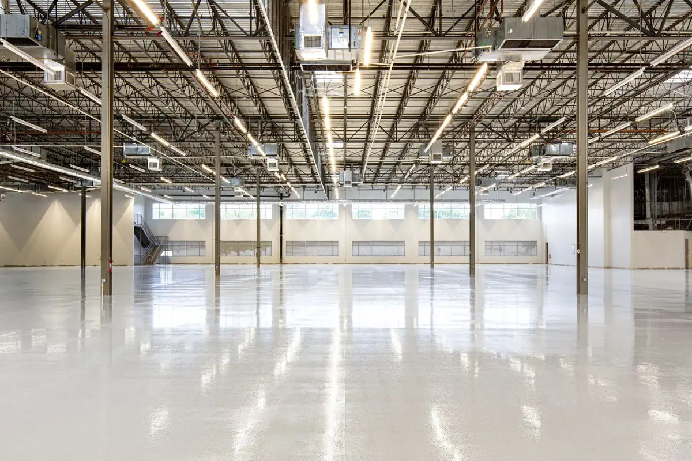
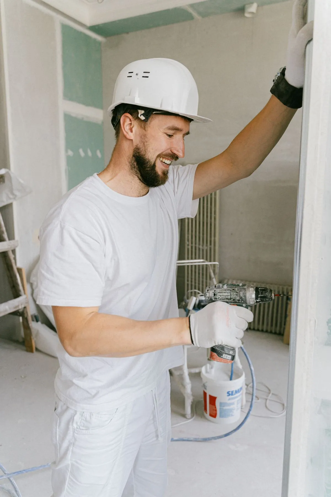

Garage, basement, and shop floor coatings built for South Dakota's hard winters and heavy road salt. Free on-site estimates, real pricing before any work starts.

Epoxy flooring is a two-part resin system that bonds to a properly prepared concrete slab and cures into a hard, seamless surface that resists salt, oil, hot tire pickup, and everyday abrasion far better than bare or painted concrete. In Sioux Falls, that matters because the region sees roughly 45 inches of snow a year and winter lows that regularly drop below zero, which means months of salt and de-icer tracked across garage and basement floors.
We coat floors for homeowners throughout Sioux Falls, Tea, Brandon, and Harrisburg, along with small shops and light-commercial spaces around the metro. Most jobs are two-car residential garages, but basements, workshops, and small commercial floors make up a steady share of our work too.

The coating is applied as a system rather than a single product: a primer suited to the slab's moisture level, a base color coat with optional broadcast flake, and a clear topcoat that adds UV stability and chemical resistance. Skipping the grinding step or any layer in that system is the most common reason a floor peels within a year of installation.
If your garage floor shows white, chalky staining or small pits near where you park, road salt and de-icer are already breaking down the surface of the concrete.
Dark blotches and lifted patches under where vehicles sit mean the bare slab has absorbed contamination that will not scrub out.
South Dakota's deep winter cold snaps followed by thaw put real stress on concrete slabs; new hairline cracks each spring are a sign the floor needs attention.
Homeowners turning a Sioux Falls basement into a gym, workshop, or family room want a sealed floor that will not hold moisture or a musty smell.
A clean, coated garage floor is a low-cost, high-visibility upgrade, since almost every buyer walks through the garage during a showing.
New concrete needs 28-30 days to cure before it can be coated. If you just poured a garage slab, we can plan the schedule around that window.
We start every job with an on-site inspection, checking the slab for moisture emission, existing cracks, prior coatings, and general condition. That inspection, not a phone call, determines which system will actually hold up on your floor.
From there we diamond grind the entire surface. We do not acid etch. Etching is faster and cheaper, but it does not open the concrete deeply enough for a real mechanical bond, and it is a major reason DIY epoxy kits fail within a season or two here. Grinding strips old sealers, oil contamination, and the top layer of cream concrete, leaving a surface profile the coating can actually grip.
After grinding, we fill cracks and control joints, vacuum thoroughly, and apply a moisture-appropriate primer, base coat with any flake broadcast, and a clear topcoat. For jobs scheduled during Sioux Falls' colder months, we lean on polyaspartic topcoats, which cure reliably even when garage temperatures sit in the 40s.
A typical two-car garage takes one to two days on site. Light foot traffic is fine after about 24 hours, but we ask customers to keep vehicles off the floor for roughly a week so the coating reaches full hardness before it takes tire weight and turning stress.
Every job gets diamond-ground prep, no shortcuts. That is the difference between a floor that lasts a decade or more and one that bubbles up after a single hard winter.
We track garage temperature before scheduling and use polyaspartic topcoats on cold-weather jobs, since epoxy applied too cold cures slowly and can haze.
Sioux Falls sits on dense Sioux quartzite bedrock with clay-heavy topsoil above it, which drains slower than sandy soil and can add extra moisture pressure under older, uninsulated slabs — something we test for before quoting basement work.
Most epoxy flooring jobs here run $4 to $10 per square foot installed, putting a standard two-car garage (400-576 square feet) at roughly $1,800 to $5,500 total. The spread comes down to three things: how much prep the existing slab needs, which coating system you pick, and whether you add a decorative flake or metallic finish.
Water-based epoxy costs the least and is the easiest to apply, but it is also the least durable option, typically lasting 3 to 5 years under daily garage use. Solvent-based epoxy runs a bit more and holds up longer. Solid epoxy or a polyaspartic hybrid system costs the most up front but can last 10 to 20 years, which is usually the better value if you are staying in the home.
Basement floors often land at the lower end of the range since there is no vehicle traffic to plan the schedule around, while shop and light-commercial floors can run higher depending on equipment, drains, and daily wear. We always give a firm number after seeing the actual slab in person, since floor condition affects price more than square footage alone.
Epoxy flooring makes sense if you park vehicles in the garage through Sioux Falls winters, deal with salt and slush tracked in for months at a time, or want a basement or shop floor that resists moisture, stains, and daily wear without constant upkeep.
It is probably not the right move yet if your slab has major structural cracking, active settling, or a standing water problem, since those need a concrete contractor before any coating goes down. It also is not worth rushing if you plan to sell within a few months and are not adding it specifically for resale appeal, since the garage still needs a full day or two of clear access.
Once fully cured, epoxy flooring is not affected by cold temperatures outside, since a heated or semi-heated garage stays well above freezing during installation and use. The bigger factor is scheduling the install itself for a time when the garage is warm enough for the coating to cure properly.
No, that is exactly what the coating is built to handle. Sealed epoxy keeps salt brine and de-icer chemicals sitting on the surface where they mop up easily, instead of soaking into bare concrete and causing pitting over the years.
A standard two-car garage takes one to two days on site for grinding, priming, coating, and topcoat. Plan on keeping vehicles off the floor for about a week afterward so the coating reaches full cure strength.
Most Sioux Falls projects run $4 to $10 per square foot installed, putting a typical two-car garage between about $1,800 and $5,500 depending on slab condition, coating system, and any decorative finish.
Often, yes. Homes built before the 1990s in the Sioux Falls area sometimes have thinner original slabs or more accumulated oil staining, which means more diamond-grinding time before the coating goes down. We factor that into the on-site quote, not the phone estimate.
Free on-site estimates for garages, basements, and shop floors across Sioux Falls, Tea, Brandon, and Harrisburg.
Call (605) 608-3764